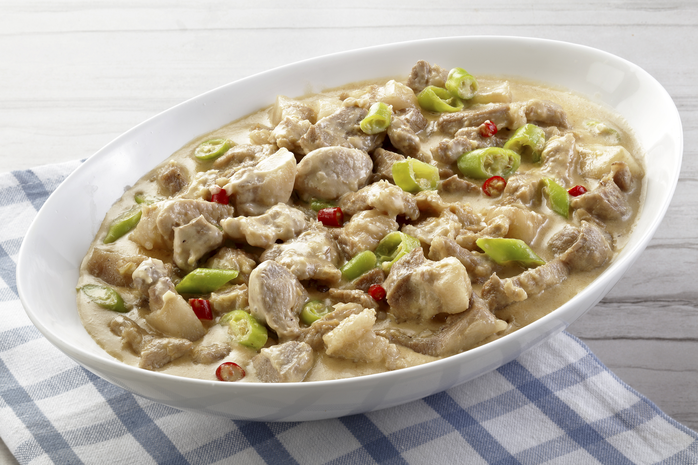
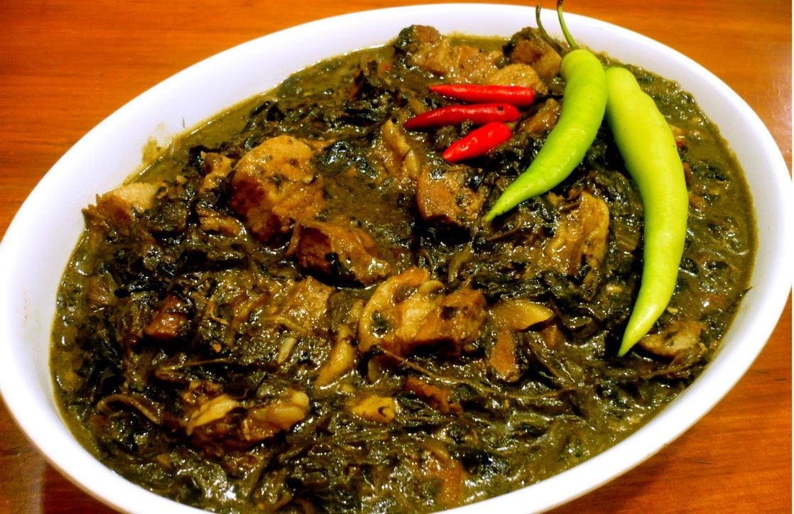
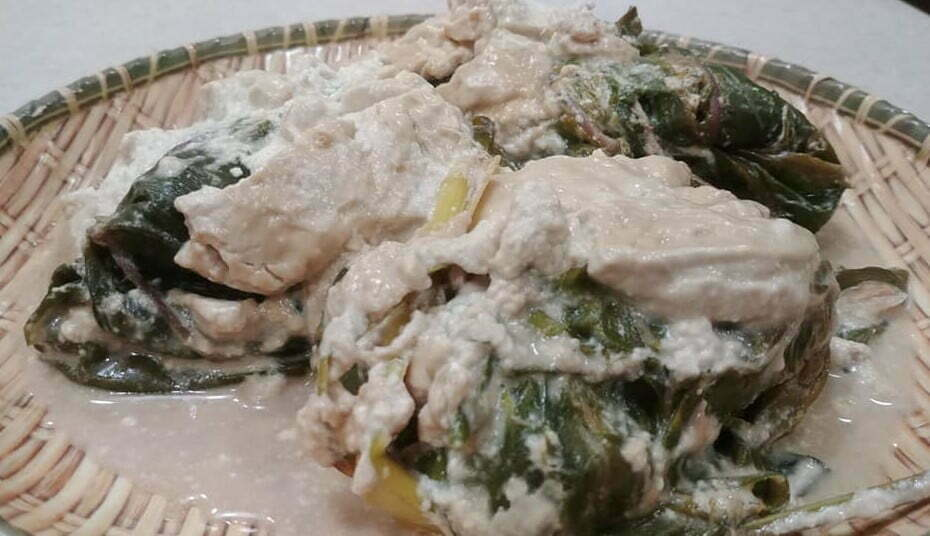
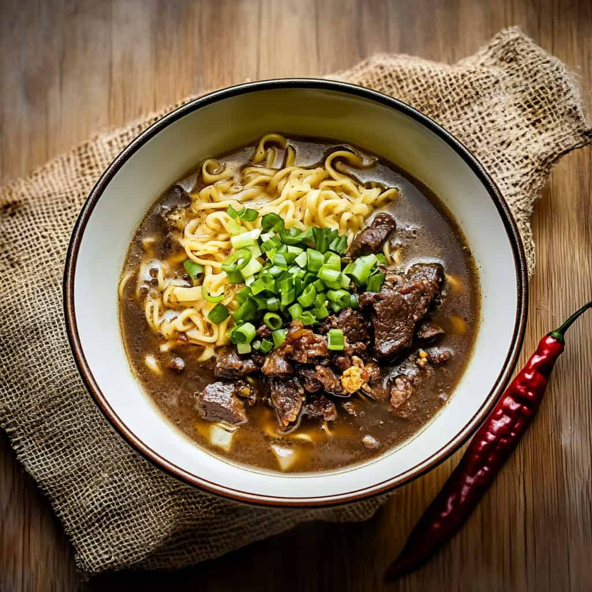

Bicolano Recipes
Learn how to cook authentic Bicol delicacies.

Bicol Express
A famous spicy dish from the Bicol Region made with pork, coconut milk, shrimp paste, and lots of chilies.
Ingredients
- 1 kg pork belly
- 2 cups coconut milk
- Shrimp paste
- Chili peppers
- Garlic and onion
Instructions
- Sauté garlic and onion.
- Add pork and cook.
- Pour coconut milk.
- Add chilies and simmer.
- Serve hot.

Laing
Laing is a creamy taro leaf dish slowly cooked in coconut milk with chili and dried fish.
Ingredients
- Dried taro leaves
- Coconut milk
- Garlic
- Ginger
- Chili peppers
Instructions
- Prepare coconut milk.
- Add garlic and ginger.
- Add taro leaves carefully.
- Simmer until soft.
- Serve warm.

Pinangat
Pinangat is made from taro leaves filled with shredded meat or fish simmered in coconut milk.
Ingredients
- Taro leaves
- Ground pork
- Coconut milk
- Garlic and onion
- Chili peppers
Instructions
- Prepare filling.
- Wrap using taro leaves.
- Arrange in pot.
- Pour coconut milk.
- Cook until tender.

Pili Nut Dessert
Candied Pili is a classic Bicol delicacy made from premium pili nuts coated in sweet caramelized sugar.
Ingredients
- Pili nuts
- Sugar
- Butter
- Vanilla extract
Instructions
- Melt sugar and butter.
- Add pili nuts.
- Mix evenly.
- Cool before serving.

Sili Ice Cream
A unique Bicolano dessert combining creamy sweetness with spicy kick from chili.
Ingredients
- All-purpose cream
- Condensed milk
- Chili flakes
- Vanilla
Instructions
- Mix ingredients.
- Add chili flakes.
- Freeze overnight.
- Serve chilled.

Kinalas
Kinalas is a noodle soup specialty from Naga City known for rich broth and tender meat.
Ingredients
- Fresh noodles
- Beef broth
- Garlic and onion
- Beef meat
- Spring onions
Instructions
- Cook broth.
- Prepare noodles.
- Add meat and toppings.
- Serve hot.